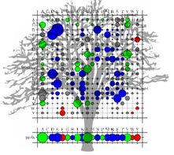
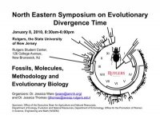

Society of Systematic Biologists
Home of Systematic Biology
Popular contentSyndicateCategories
User loginNavigationWho's onlineThere are currently 0 users and 2 guests online.
|
Workshop on Molecular Evolution, Woods Hole25 July - 6 August 2010, individual research session 6 - 13 August 2010 The Workshop on Molecular Evolution has been the finest course on the subject since first offered in 1988 in Woods Hole, USA. The Workshop consists of a series of lectures, demonstrations and computer laboratories that cover various aspects of molecular evolution. Faculty are chosen exclusively for their effectiveness in teaching theory and practice in molecular evolution. Included among the faculty are developers and other experts in the use of computer programs and packages such as BLAST, BEAST, Clustal W and Clustal X, FASTA, FigTree, GARLI, Genealogical Sorting Index, LAMARC, MAFFT, MrBayes, PAML, PAUP*, and SeaView who provide demonstrations and consultations. The course is designed for established investigators, postdoctoral scholars, and advanced graduate students with prior experience in molecular evolution and related fields. Scientists with strong interests in molecular evolution, phylogenetics, population genetics, and related fields are encouraged to apply for admission. Lectures and computer laboratories total ~90 hours of scheduled instruction. An optional all-computer laboratory of 54+ hours of independent work with guidance and consultation of some faculty and teaching assistants is offered during the third week. Admission is limited and highly competitive, with admissions decisions determined by an international committee. Participants find the individual research session to be especially useful. Postdoctoral Fellowship: Molecular Phylogeny - Inference of Ancestral DNA and ProteinThe position Applications are invited for a three-year Postdoctoral Fellowship in molecular phylogenetics. The position will be based at CSIRO Entomology, which is part of the Black Mountain Laboratories in Canberra, Australia. Joining the newly established Bioinformatics and Phylogenomics Laboratory led by Dr Lars Jermiin, the appointee will develop, test and use phylogenetic methods to infer ancestral nucleotide and/or amino acid sequences under general conditions. Ph.D. position available at University of FloridaA Ph.D. position is available at the Florida Museum of Natural History and in the Department of Biology, University of Florida, under the supervision of Dr. Nico Cellinese.� The successful applicant will work on the systematics, evolution, and biogeography of Mediterranean Campanulaceae.� This work will contribute to a large species-level phylogeny and analysis of pattern of endemism in the Aegean area.� Active interaction with international collaborators and extensive fieldwork in the Aegean Archipelago and surrounding areas are expected.� Candidates must have a strong interest in systematics and evolutionary biology, and prior laboratory experience (e.g., molecular techniques including PCR, cloning, sequencing, etc.) is required.� By ncellinese at 2009-12-15 02:19 | read more
EMBO course on Computational Molecular Evolution Deadline for applications: 31 January 2010 This EMBO Practical Course aims to provide researchers with the theoretical knowledge and practical skills required to carry out molecular evolutionary analysis on their own data and on data drawn from sequence databases. The course will combine basic assumptions and ideas fundamental to the field with discussion of cutting-edge methodologies, and is therefore relevant to researchers with a range of different experience levels. phyloseminar.org
The first seminar (by Marc Suchard) has already been held, and on December 7th it's Ward Wheeler's turn. For more details visit phyloseminar.org or subscribe to the mailing list. By Roderic Page at 2009-12-02 17:40 | read more
Northeast arthropod divergence time estimation workshop at RutgersA one day meeting on arthropod divergence time estimation is being held at Rutgers University, New Jersey on Friday, January 8, 2010. Registration is free, but space is limited; please pre-register soon so that we will have an idea of numbers, either using Doodle or by emailing Jessica Ware). An official meeting website is coming, but in the meantime you can also visit the meeting's Facebook page. Evolution Meeting SurveyHave you attended the US Evolution meetings in the past? Do you plan to attend them in the future? If so, we'd like to get your input regarding childcare and MentorNet mentoring programs offered at the conference. With funding from an Elsevier Foundation New Scholars Grant, on-site childcare and email-based MentorNet mentoring programs were offered for the first time at the Evolution 2009 conference in Moscow, ID, and will be offered at Evolution 2010 (Portland, OR) and Evolution 2011 (Norman, OK). The survey will take about 5 minutes, and your responses are completely anonymous. Please click Here to take survey. Thanks for taking the time to help out! Heidi Meudt & Leah Larkin NESCent Phyloinformatics VoCampNESCent Phyloinformatics VoCamp OPEN CALL FOR PARTICIPATION Integrating diverse biological data with the historical process of evolution is a grand challenge for 21st century biology. The interoperability of data from diverse fields (e.g., genetics, ecology, biodiversity, biomedicine) requires a technology infrastructure based on formalized, shared vocabularies. Developing such vocabularies is a community project. In order to build controlled vocabularies and ontologies, the National Evolutionary Synthesis Center (NESCent: http://nescent.org) is sponsoring a "Phyloinformatics VoCamp". Systematics and taxonomy research scheme launch eventThe UK Research Councils announced the launch of a new funding scheme for research in systematics and taxonomy. The Systematics and Taxonomy (SynTax) scheme is designed to provide short-term funding for preliminary research that will form the basis of novel responsive mode proposals with a substantial systematics/taxonomy component. The scheme aims to stimulate high quality taxonomy and systematics-related research proposals to the UKââ?¬â?¢s Research Councils. SynTax will be launched 12 November 2009, 6pm, at the Linnean Society, Burlington House, Piccadilly, London W1J 0BF. SSB student awardees
Ernst Mayr Award |
Latest issue
EVOLDIRphylobabble.orgiPhyloPhyloseminarSystematics AssociationNESCentThe Genealogical World of Phylogenetic NetworksCiteULike PhylogenyEvolutionary Bioinformatics
CladisticsBMC Evolutionary Biology
Molecular Biology and Evolution |
 Follow us on Twitter
Follow us on Twitter Find us on Facebook
Find us on Facebook